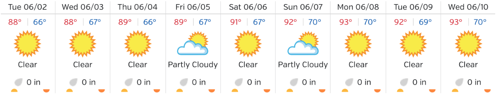

A day without the Apple Watch so far: not a fan. I don’t need it, but I do miss it.
→ 2015/06/02 11:16 amAustin rain
I think it has finally stopped raining in Austin. Starting to look like summer again:

Contrast with this video we took on our street last week. We get our fair share of thunderstorms, but I had never seen anything quite like the rain we got last month.
Was feeling pretty great that I had breakfast and a beta app submitted to TestFlight before 7am. But just realized I left the house without my Apple Watch.
→ 2015/06/02 8:29 amWordPress microblog posting from Do Note
I finally have a great use for IFTTT’s Do Note app. I’ve wired it up to my WordPress blog so that I can quickly publish microblog posts there. Previously, if I was on the go I could use the official WordPress iOS app, but that requires a bunch of extra taps: setting the post format to “status”, setting the category to “Snippets”, and going back and forth between screens. Now all of those defaults are baked into the IFTTT recipe. (Grab this WordPress plug-in to set the custom post formats automatically.)
I also wanted to streamline my cross-posting to App.net, which before now had been a manual copy and paste. I use a pair of RSS triggers in IFTTT for this as well, to go from my main RSS feed and my microblog RSS feed. And at the same time, I’ve updated the CSS for my microblog posts so they look a little better over the web.
Effortless tweeting is a big part of what Twitter got right on user experience. With WWDC around the corner, I should be posting to my own microblog more frequently now that I have a good workflow.
Now using IFTTT’s Do Note for quick microblog posting. Goes to WordPress with the right format and category, then pushed to ADN.
→ 2015/06/01 12:36 pmTook a little time this morning to improve the CSS for my microblog posts. Also added links to the two RSS feeds.
→ 2015/06/01 10:15 amOne week until WWDC. My predictions? That I’ll have a great time in the city for a few days and try not to panic about anything Apple announces.
→ 2015/06/01 9:15 amI actively try to avoid Google services, but Google Photos is compelling. I’m giving it a try. Photos are probably the most important files my family has, so I think it’s worth it to have an extra backup and new way to search.
→ 2015/05/29 6:26 pmWe’re mixing it up for NSDrinking tonight. New venue this month: Radio Coffee & Beer, around 7pm. Not sure what the weather will be like, so be safe if you’re out driving.
→ 2015/05/28 3:05 pmTwitter Island
To cope with his dislike for how Twitter treats the microblog part of their platform, Brent Simmons has adopted a strategy of deleting old tweets:
“So I haven’t deleted my account or made it private. I will respond to some messages. It’s just that I’ll delete my response after a day or a week or whatever so that Twitter is a chat-only service for me.”
Justin Williams joked that Brent and I are now the sole inhabitants of “Manton Island”. That’s funny but it’s actually backwards; it’s Twitter that is the island. Everyone is there, though, in an overpopulated mess, so they don’t realize they’re cut off from the rest of the world — the open web, designed 25 years ago as an interconnected system of countless islands.
The risk on Twitter Island is that the monarchy can change the rules. Cars that once were great now can’t run on the road. Windows that once had a beautiful view now only look inward. Eventually maybe the whole thing sinks, with waterlogged tweets (which you thought you controlled) floating above the surface like lost bubbles over Atlantis.
The rule of the open web is much simpler: you own your content if it’s on your domain name. That’s why I have my microblog posts here on manton.org and with their own RSS feed.
I’ve been working on a new project that I think is the next step for microblogging. It still has elements of being an island, as most web apps inherently do. But mine isn’t just an island; it’s an island builder, with massive bridges to the mainland, to other nearby islands, to places we haven’t even dreamed up yet.
Cancelled cable TV again
We went probably 10 years without cable TV, then splurged a couple years ago — HBO, Showtime, the works — to catch up (and keep up) with our favorite shows. Then we got sucked into other channels that made it “difficult” to cancel, such as Fox Sports Southwest for all the Spurs games this year. Sadly that final reason ended Saturday night as the Spurs lost to the Clippers in the final seconds of game 7, wrapping up the greatest first-round matchup I’ve ever seen.
Time Warner will try almost anything to keep you as a customer. 30 minutes and 3 phone calls later, we’re cable TV free but still have internet with them, upgraded to 200 Mbps. To offset our loss of channels, we’ve got TNT, AMC, and HBO through Sling TV. It’s significantly cheaper and we can have a small Roku in the living room instead of a giant, loud, overheating DVR box.
Watermark transition plan
I sent an email to Watermark customers over the weekend, letting them know that the service as it currently exists will be going away on May 15th. As I wrote about last year, Twitter has improved their search enough that a part of what Watermark is good at is no longer as necessary as it once was. However, I still see interest in Tweet Marker, from developers and users, so I wanted to keep the web-based timeline and sync from Watermark and make it available to all Tweet Marker subscribers.
You can learn more about Tweet Marker here. I’ve had to significantly scale out the backend servers this year, including adding a second load balancer, so I’d love your support. The new timeline feature will roll out later in May.
While I’m happy to keep offering a part of Watermark (now back in Tweet Marker), I have less good news for Tweet Library. I’ve found it very difficult to justify the time to finish the new version. It’s now looking likely that the current version will be the last.
Listen to me talk about my new Apple Watch and what I think it means for developers. Core Intuition episode 181 is out now.
→ 2015/04/30 10:06 amUsed Apple Pay on my watch to pay for coffee this morning. Very smooth experience.
→ 2015/04/28 9:32 amSearchpath improvements
As part of a renewed commitment this year to work on my web app Searchpath, I’ve just rolled out a few improvements. A search engine like Searchpath needs frequent maintenance to keep running smoothly — minor bug fixes and behind-the-scenes work on queues and web crawling — but I also hope to catch up on new features that I’ve long planned for the product.
One marketing bullet I always had that wasn’t fully realized: “Also serves as a text backup for your site.” Searchpath now exposes links to download both the HTML for any stored page on your site as well as a text-only version of that page after Searchpath has attempted to trim out the navigation and other links. Hopefully this will help out any customers who might need to retrieve lost text from their site if their primary site backup failed (or doesn’t exist).
Searchpath is free to try and $8/month or $75/year. Setup is as simple as copy/pasting one line of JavaScript where you want a search box. You can learn more and get started here.
Core Int jobs testimonials
We’ve been lucky to see some great job listings appear on Core Intuition Jobs. Companies are getting good résumés and job applicants are finding the kind of job they’ve always wanted.
When we hear from companies who have hired someone, we like to include a brief testimonial on the sidebar of the site. We’re about to add this one from Ken Drew at iRobot:
“Our experience with the Core Intuition Jobs board went beyond our expectations. It provided higher caliber candidates for our recent iOS developer position. After doing code reviews for the candidate we eventually hired, we are more than pleased with who we found.”
Thank you to everyone who listens to the podcast or watches on Twitter for new job listings. The opportunities for iOS and Mac developers have never been better. Get the job you want or find the next great member of your team.
Core Int 180 and Slack
We posted this week’s Core Intuition late last night. This episode is all about WWDC tickets, our plan for San Francisco, and when we’re going to adopt Swift.
We’re also trying something new for listeners, or anyone who wants to talk about programming, WWDC, and other Mac and iOS topics. You can get an automatic invite to our Slack channels for the show by visiting chat.coreint.org. Feel free to join in! I’ve been impressed with how well Slack works for this, and the great discussion that’s already happening there.
John Siracusa’s unbreakable record
I’ve been watching a lot of NBA games this season. I’ve caught well over half of the Spurs’s 82 games so far alone, on TV and SiriusXM in the car (and a few in person in San Antonio). I’m not sure how far they’ll make it, but you can’t argue with the greatness of this team over so many years.
The NBA has some records that just seem unbreakable. Either because the rules or style of play have evolved in the modern era, or because the records were insane at the time, these are feats we may not see again. Here are 10 such records, from Wilt Chamberlain’s 100-point game to the Laker’s 33-game winning streak to Bill Russell’s 11 championships. The Spurs’s 16-year streak of 50-win seasons is approaching this category of success as well.
That’s kind of how I view John Siracusa’s series of Mac OS X reviews on Ars Technica. There have been other excellent reviews about Mac OS X over the years, but the depth and consistency of John’s reviews may always stand apart. If you’re starting today and want to top it, you will have to work for the next 15 years just to be competitive at all.
Congratulations John on a great run. Nothing seems to last forever on the internet — web sites fade away, and some obscure technology isn’t well-covered to begin with — so it’s nice to know that these Mac OS X reviews are at a stable site where we’ll be able to reference them for years to come.
To make the finals again, the Spurs will have to go through the 3 best teams in the western conference: Clippers → Houston (probably) → Golden State. Tough, but they know how to beat each of those teams.
→ 2015/04/16 10:51 amTextshots
Federico Viticci of MacStories provides some context for so-called textshots with the upcoming release of Wikipedia’s new app:
“The practice of sharing ‘textshots’ – screenshots of text, as they’re often referred to – has taken off among certain tech niches for two reasons. First, turning text into a static image is a primitive but effective workaround to circumvent Twitter’s 140-character limitations. But more importantly, humans have a natural tendency for convenience and visual feedback, and these two aspects are combined in the art of well crafted textshots: they save you a click, and they make shared passages of text more visually appealing.”
I don’t like textshots. They’re like DRM for tweets: a trade-off that obscures real metadata and text selection just to hack around Twitter’s limitations.
If I were building a Twitter-like social network, I’d certainly allow basic HTML styled text and inline images in a microblog post, but I wouldn’t go out of my way to encourage textshots.